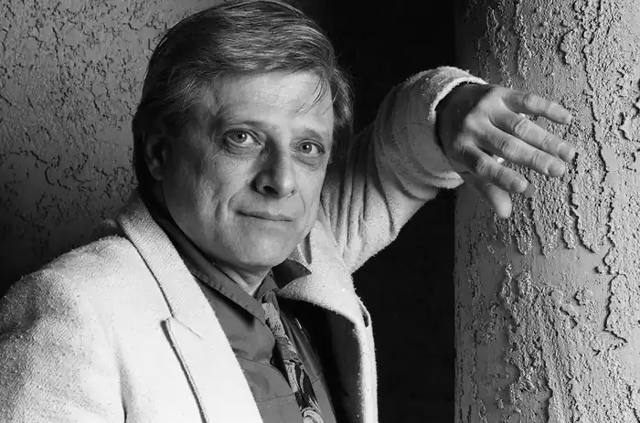
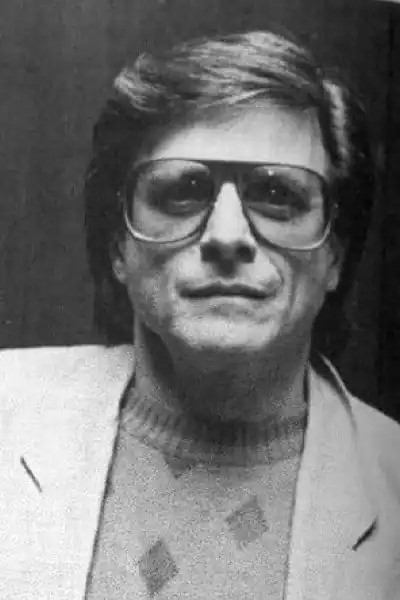
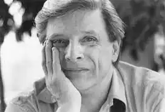

Гарлан Еллісон (англ. Harlan Jay Ellison, 27 травня 1934 — 28 червня 2018) — американський письменник-фантаст.
Еллісон народився 27 травня 1934 року в єврейській родині в Клівленді, штат Огайо, у сім'ї Серіти (уродженої Розенталь) і Луїса Лаверна Еллісона, стоматолога та ювеліра. У нього була старша сестра Беверлі (Рабнік), яка народилася в 1926 році. Вона померла в 2010 році, не розмовляючи з ним після похорону своєї матері в 1976 році. Його сім'я згодом переїхала до Пейнсвіля, штат Огайо, але повернулася до Клівленда в 1949 році, після смерть його батька. Еллісон часто тікав з дому (в інтерв'ю Тому Снайдеру він пізніше стверджував, що це сталося через дискримінацію з боку його однокласників), влаштовуючись на різні випадкові роботи, зокрема, до 18 років, "ловив тунця біля узбережжя Галвестона". , мандрівний збирач урожаю в Новому Орлеані, найнятий зброю для заможного невротика, водій вантажівки з нітрогліцерином у Північній Кароліні, кухар на короткі замовлення, водій таксі, літограф, продавець книг, ходун в універмазі, продавець щіток від дверей до дверей , а в дитинстві актор у кількох постановках у Cleveland Play House". У 1947 році лист від шанувальників, який він написав до Real Fact Comics, став його першим опублікованим твором.
Еллісон навчався в Університеті штату Огайо протягом 18 місяців (1951–1953), перш ніж його виключили. Він сказав, що його виключили за те, що він вдарив професора, який принижив його письменницькі здібності, і протягом наступних 20 або близько того років він надсилав цьому професору копії кожної опублікованої ним історії. У 1949 році Еллісон опублікував дві серіалізовані історії в Cleveland News, а на початку 1950-х він продав історію EC Comics. У цей період Еллісон був активним і помітним членом фанатів наукової фантастики та публікував власні науково-фантастичні фанзини, такі як Dimensions (який раніше був бюлетенем Cleveland Science Fantasy Society для Cleveland Science Fantasy Society, а пізніше Science Fantasy Bulletin) Еллісон переїхав до Нью-Йорка в 1955 році, щоб продовжити кар'єру письменника, переважно наукової фантастики. Протягом наступних двох років він опублікував понад 100 оповідань і статей. Він служив в армії США з 1957 по 1959 рік. Його перший роман, Павутина міста, був опублікований під час його військової служби в 1958 році, і він сказав, що основну частину написав під час базової підготовки у Форт-Беннінг, штат Джорджія. Після закінчення армії він переїхав до Чикаго, де редагував журнал Rogue. Еллісон одружувався п'ять разів; всі стосунки закінчувалися протягом кількох років, крім останнього. Його першою дружиною була Шарлотта Стайн, з якою він одружився в 1956 році. Вони розлучилися в 1960 році, і він пізніше описав шлюб як "чотири роки пекла, тривалого, як скиглення генератора". Пізніше того ж року він одружився з Біллі Джойс. Сандерс; вони розлучилися в 1963 році. Його шлюб у 1966 році з Лореттою Патрік тривав лише сім тижнів. У 1976 році він одружився з Лорі Горовіц. Йому був 41, а їй 19, і пізніше він сказав про шлюб: "Я був відчайдушно закоханий у неї, але це був дурний шлюб з мого боку". Через вісім місяців вони розлучилися. Він і Сьюзен Тот одружилися в 1986 році, і вони залишилися разом, живучи в Лос-Анджелесі, до його смерті через 32 роки. Сьюзан померла в серпні 2020 року. Приблизно 10 жовтня 2014 року в Еллісона стався інсульт. Незважаючи на те, що його мова та розумові здібності не були порушені, у нього був параліч правого боку. Гарлан Еллісон помер уві сні вдома в Лос-Анджелесі вранці 28 червня 2018 року.